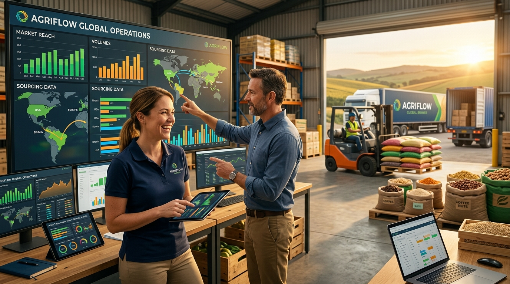

ธุรกิจโบรคเกอร์เกษตรAgricultural Brokerage Business
โจทย์หลักคือการทำให้ข้อมูลและการประสานงานที่กระจัดกระจาย กลายเป็นระบบเดียวที่ช่วยให้ทีมตัดสินใจเร็วขึ้น ลดความผิดพลาด และมองเห็นโอกาสทางธุรกิจได้ชัดขึ้น การออกแบบจึงเน้น data flow, visibility และการเชื่อมต่อ workflow ที่เคยกระโดดข้ามกันThe core challenge was turning fragmented data and coordination into one system that improved decision speed, reduced mistakes, and created clearer business visibility. The solution centered on stronger data flow, clearer visibility, and workflow integration.
ถ้าธุรกิจของคุณเจออาการคล้ายกัน ลองดู pain point เรื่องงานซ้ำ, 7 สัญญาณที่ควรเริ่ม workflow automation และ หน้าส่ง brief เพื่อเทียบโจทย์ของตัวเองได้If your business faces similar symptoms, review the repetitive-work pain point, the workflow automation signals article, and the contact brief page to compare your current situation.
